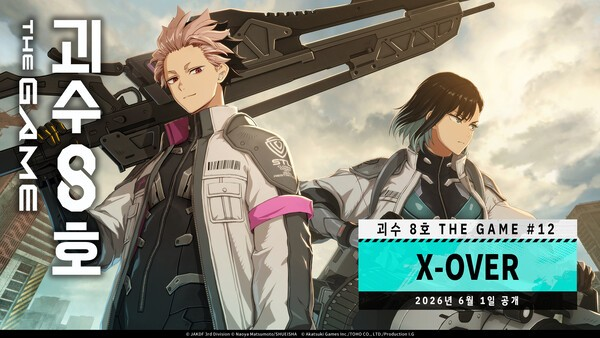
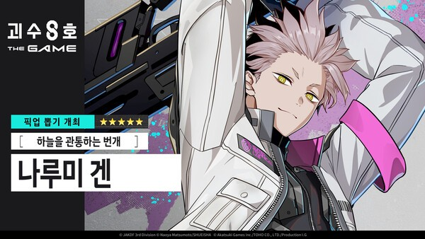

괴수 8호 더 게임 나루미 겐 신규 5성, 12장 X-OVER 정리
괴수 8호 THE GAME에 6월 2일 메인 스토리 12장 'X-OVER'가 들어오면서, 인류를 위협하는 '차원 식별 괴수 A호'와의 결전이 본격적으로 열렸습니다. 여기에 맞춰 신규 ★5 캐릭터 '하늘을 관통하는 번개' 나루미 겐과 픽업 뽑기까지 함께 풀렸는데요. 이번 글에서는 12장 X-OVER로 뭐가 바뀌었고, 신규 5성 나루미 겐은 어떤 캐릭터인지, 그리고 지금 들어가도 괜찮은 타이밍인지 담백하게 정리해봤습니다.

- 6월 2일 메인 스토리 12장 'X-OVER' 업데이트 — 차원 식별 괴수 A호 결전 + 뉴욕 원정 작전
- 신규 ★5 '하늘을 관통하는 번개' 나루미 겐 + 전용 무기 ★5 총검 'GS-아레믹' 픽업
- 스토리·스코어 배틀 보상으로 차원 크리스탈 최대 1,500개 등 수급
- 애니메이션으로 입문한 분이 따라잡기 좋은 타이밍
이번 업데이트의 중심은 메인 스토리 12장 'X-OVER'입니다. 인류 최강의 적으로 불리는 '차원 식별 괴수 A호'와의 결전을 앞두고, 국제 방위 조직 'CLOZER'가 세계 각국의 방위대 전력을 뉴욕에 집결시키는 대규모 원정 작전이 펼쳐지는데요. 제목 그대로 여러 부대가 한자리에 모이는 '크로스오버' 성격의 장이라, 그동안 따로 움직이던 캐릭터들이 한 전장에 서는 그림을 볼 수 있습니다.
여기에 신형 장비 'X-OVER 슈트' 관련 내용도 함께 들어오면서, 스토리뿐 아니라 전력 구성에도 변화가 생겼습니다. 메인 스토리를 진행하면서 자연스럽게 신규 콘텐츠와 보상까지 챙길 수 있는 구조라, 한동안 손을 놓았던 분도 다시 붙기 좋은 분량입니다.

이번 X-OVER의 간판은 신규 ★5 캐릭터 '하늘을 관통하는 번개' 나루미 겐입니다. 원작 괴수 8호에서 일본 방위대 안에서도 최강으로 꼽히는 대원이라, 등장 자체로 기대를 모은 캐릭터인데요.
게임 속 나루미 겐은 전용 조정을 거친 'CLOZER 슈트'를 입고, '차원 식별 괴수 병기 넘버즈 1'을 사용합니다. 이 장비는 Rt-0001과 같은 콘택트 렌즈형으로 설계돼 체내 전기 신호를 증폭시키고, 그 에너지를 건틀릿형 장비를 통해 공격으로 방출하는 구조입니다. '번개'라는 이름값에 맞는 전기 기반 콘셉트라고 보면 되겠습니다. 전용 무기로는 ★5 총검 'GS-아레믹'이 함께 나옵니다.
신규 캐릭터에 맞춰 픽업 뽑기도 정식으로 진행됩니다. 픽업 기간에는 '하늘을 관통하는 번개' 나루미 겐과 전용 무기 ★5 총검 'GS-아레믹'의 획득 확률이 함께 올라가는데요. 캐릭터만 노리기보다 전용 무기까지 같이 노릴 수 있는 기간이라, 이 캐릭터를 키울 생각이라면 픽업 기간 안에 도는 편이 효율적입니다.
뽑기 재화도 같이 챙길 수 있습니다. 메인 스토리 12장을 진행하고 스코어 배틀 콘텐츠를 돌면 차원 크리스탈을 최대 1,500개까지 포함한 보상을 받을 수 있는데요. 신규·복귀 유저 입장에서는 이 보상으로 픽업에 한 번 도전해볼 실탄을 마련할 수 있습니다.
결론부터 말하면, 애니메이션으로 괴수 8호를 접한 분이라면 지금이 입문하기 꽤 좋은 타이밍입니다. 메인 스토리가 12장까지 풀려 원작의 굵직한 전개를 게임으로 따라갈 수 있고, 신규 ★5 캐릭터와 보상이 한꺼번에 들어온 직후라 초반 전력을 갖추기도 수월하거든요.
한동안 쉬었던 복귀 유저에게도 X-OVER는 다시 붙을 명분이 됩니다. 신규 스토리 분량이 넉넉하고, 차원 크리스탈 보상으로 픽업도 노려볼 수 있으니 감을 되찾기 좋은 구간이고요. 다만 신규 캐릭터의 세부 성능은 직접 운용하면서 판단하는 게 정확하니, 픽업은 본인 로스터 상황을 보고 결정하시면 되겠습니다.
6월 2일 업데이트로 괴수 8호 THE GAME에 메인 스토리 12장 'X-OVER'와 신규 ★5 '하늘을 관통하는 번개' 나루미 겐이 들어왔습니다. 차원 식별 괴수 A호와의 결전, 전용 무기 픽업, 차원 크리스탈 보상까지 묶여 들어온 만큼, 애니로 입문하려는 분도 복귀하려는 분도 들어오기 좋은 타이밍입니다.
원작 팬이라면 이번 X-OVER에서 나루미 겐이 어떤 모습으로 그려지는지 직접 보는 재미가 있을 텐데요. 오늘 내용은 여기까지 전해드립니다.